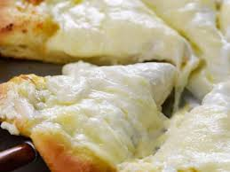

Odin Three Cheese Pizza Recipe

Description
In this recipe we will be creating a hand made pepperoni pizza.This pizza will mak eyou the life of the party, its easy and checks all the marks for a delicious pizza.
Now, if you are ready to start kneading and baking. we will start with a basic dive into the ingredients needed and it will be followed by a step-by-step description in order to have the pizza outcome we have all been waiting for.
Ingredients
Dough
- 1 cup + 1 Tbsp water
- 2-1/4 tsps active dry yeast
- 1 tsp granulated sugar
- 3 cups all purpose flour
- 1 tsp Kosher salt
- 1 Tbsp exta virign olive oil
Pizza topings
- 1 Bag of Asiago (250 grms)
- 1 Bag of provolone (250 grms)
- 1 bag of Mozarella (1 Kg)
- 1 bottle of italian herbs tomatoe sauce
- 1 parmesan bottle
- 1/4 cup olive oil
Steps
- Warm up the water to 110 - 115 fahrenheit.
- Once water has reached the temperature, add the dried yeast and the sugar to the water and let rest for 5 minutes.
- In a bowl mix the flour and the salt
- Add the oil to the flour mix and once the yeast has fomed add the yeast to this mix.
- Knead the mix until it has formed a homogeneous consitency and leave it in a ball form.
- Leave the ball of dough to rest for around 1hr to 1hr and a half and cover it with plastic wrap to prevent the water to evaporate.
- Preheat your Oven to 400 fahrenheit.
- Once the dough has double its size, roll out the pizza dough on a pizza baking sheet.
- Add the italian herb sauce to the middle of the crust and with a spoon spread it so that it covers the whole pizza crust.
- Combine all the cheeses (Asiago, Mozzarella, Provolone) and add a layer of cheese that covers the whole pizza crust.
- With a cooking brush add the oil to the outer rim of the pizza dough, and then use the parmesan and add it so that it sticks to the outer rim.
- Bake your pizza for 20 - 25 mins, cut it to the desired pizza slice size and enjoy.